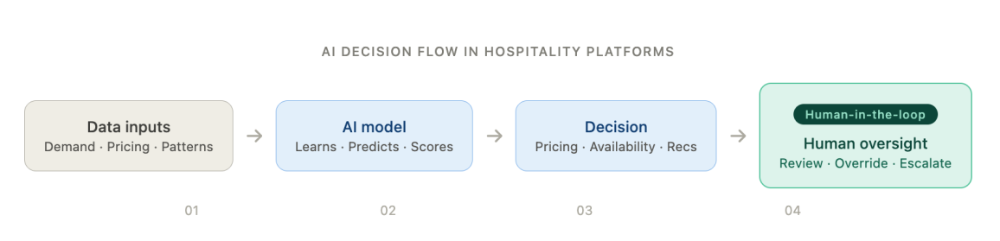
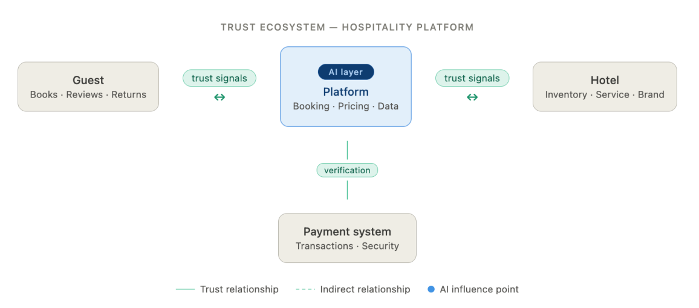

DMBA 6001 Leading Strategic Digital Transformation
When the Algorithm Checks You In: AI, Trust, and the Governance Gap in Hospitality
When Trust Stops Being Personal
The premise of hospitality is simple; guests place their trusts in hoteliers, and the hotelier stays true to their word. However, as AI begins to make decisions that impact guests directly such as how much they are charged, what they see and the quality of the service they receive, it can be argued that trust is no longer a simple exchange between guest and hotelier. Trust is now granted at a system level.
The Black Box Problem: AI as Opacity, Not Intelligence
AI has allowed revenue management systems to scale beyond the means of manual revenue management. AI powered revenue management allows for the processing of thousands of simultaneous variables producing demand signals, booking pace, competitor rates, and local events (Gao, 2025). While operational gains are clear, one can argue that these systems are black boxes. Mohammed and Denizci Guillet (2025) reveal that revenue managers vaguely recognize the need for AI transparency, however they also reveal the lack of awareness towards explainable AI and its critical tooling in surfacing the reasoning behind the outputs produced by AI. Systems that cannot explain themselves are not trustworthy, rather they merely demand blind trust.

Dynamic Pricing: The Sharpest Edge of the Trust Platform
AI algorithmic decision making becomes personalized through dynamic pricing. For example, overnight rate changes, prices that differ for loyal guests and first-time guests, charges unexplainable at check-in; these examples break guest loyalty and trust. Before full automation, hoteliers and revenue managers must bridge the gap between perceived fairness and technical accuracy (HITEC, 2024). High performing dynamic pricing with the inability to communicate supersedes the foundational trust that the hospitality industry is built upon.

Explainability as the New Accountability
Explainable AI (XAI) can rebuild broken trust, offering structured responses that communicate its reasoning and surface the variables and thresholds used to provide its outputs (Park & Yoon, 2025). XAI gives revenue managers and hoteliers more control over algorithmic outputs, allowing them to question, challenge and ultimately override dynamic pricing decisions made by AI. Furthermore, XAI is becoming a legal requirement, made evident through the EU AI Act (Regulation 2024/1689) which has been enforced since August 2024. This new regulation mandates transparency and human oversight in high-risk AI systems; a classification in which dynamic pricing and guest profiling tools fall under (Inside Hospitality Solutions, 2024).
Trust is Not a Feature – It is a Governance Choice
Ultimately, AI systems that do not continuously validate its outputs against real-world outcomes will fail, not because of its technology, but due to the absence of governance (Kopalle et al., 2023). The question hospitality leaders must answer is not whether they can adopt AI in their organizations; rather it is whether they have the governance capabilities to ensure trust in AI. Elements such as transparent pricing, human oversight and intervention, and accountability structures are no longer optional factors; these have become the foundation for trust.
Over the past century, trust in the hospitality industry is something in which is earned in a simple moment; however, this trust is at risk of breaking with the intervention of AI. Trust ultimately belongs to those who can successfully govern their systems with the same austerity once used in staff training.
Reference List
- European Union. (2024). Regulation (EU) 2024/1689 of the European Parliament and of the Council laying down harmonised rules on artificial intelligence (Artificial Intelligence Act). Official Journal of the European Union. artificialintelligenceact.eu
- Gao, J. (2025). Optimizing hotel revenue management through dynamic pricing algorithms and data analysis. Journal of Hospitality & Tourism Technology. DOI
- HITEC. (2024). How AI revenue tools are transforming hotel revenue. Hospitality Industry Technology Exposition and Conference. HITEC
- Inside Hospitality Solutions. (2024). Decoding the EU AI Act: What hoteliers need to know. insidehs.com
- Kopalle, P. K., Pauwels, K., Akella, L. Y., & Gangwar, M. (2023). Dynamic pricing: Definition, implications for managers, and future research directions. Journal of Retailing, 99(4), 580–593. DOI
- Mohammed, I., & Denizci Guillet, B. (2025). Stakeholder perspectives on integrating explainable artificial intelligence into hotel revenue management systems. Tourism Management Perspectives. DOI
- Park, K., & Yoon, H. Y. (2025). AI algorithm transparency, pipelines for trust not prisms: Mitigating general negative attitudes and enhancing trust toward AI. Humanities and Social Sciences Communications, 12, Article 1160. DOI
This blog post was researched, written, and argued entirely by the author. Generative AI (Claude, Anthropic) was used for two limited purposes: to produce the visual assets embedded in this post — specifically, the diagrams — and to verify the accuracy and accessibility of cited sources. All arguments, analysis, and written content reflect the author’s own thinking.